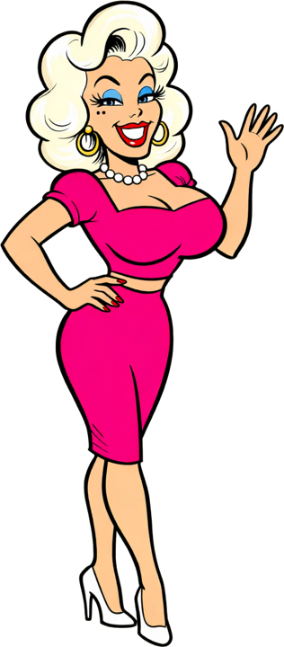
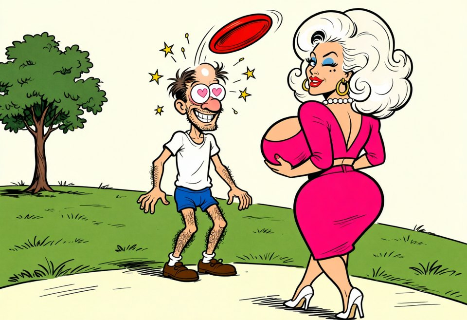
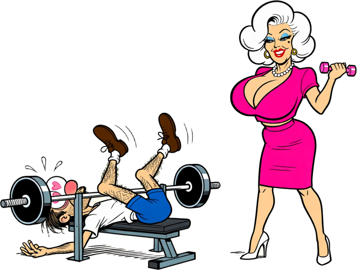
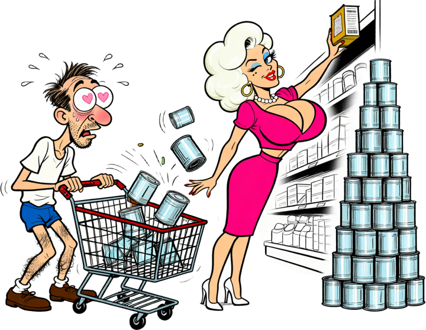
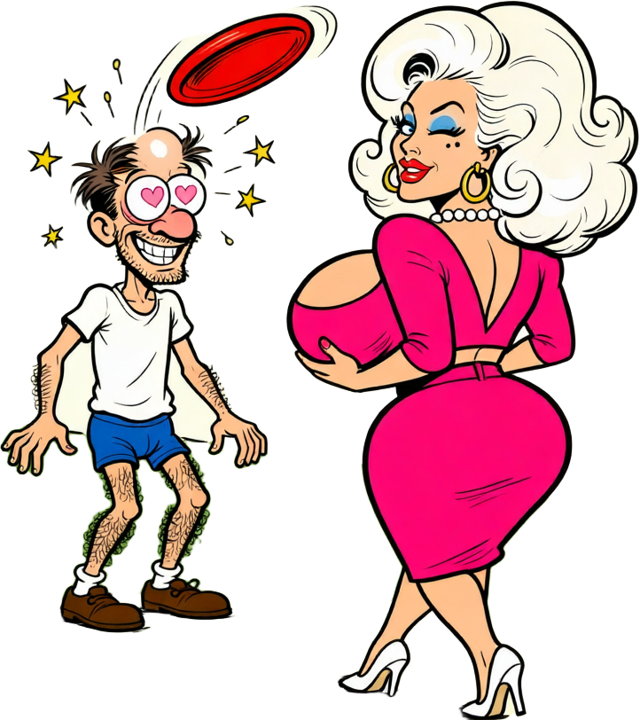
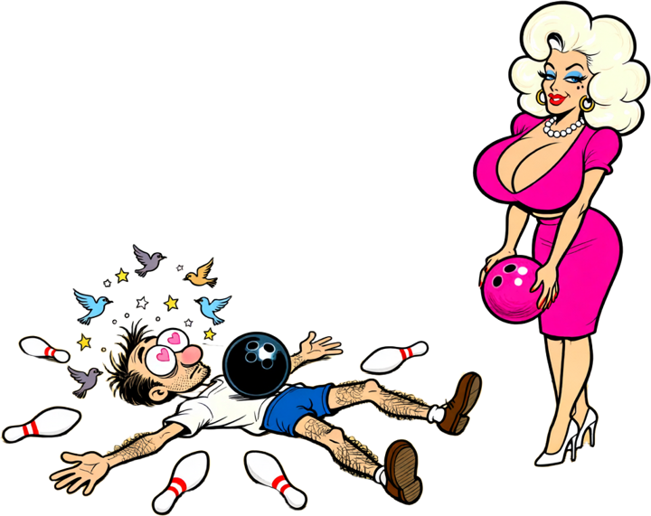
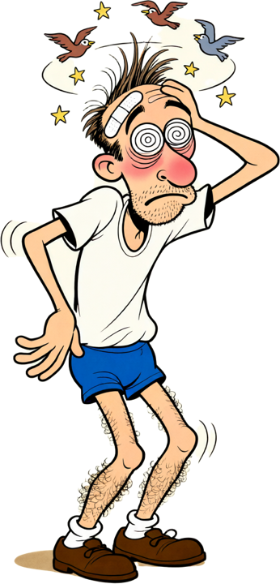
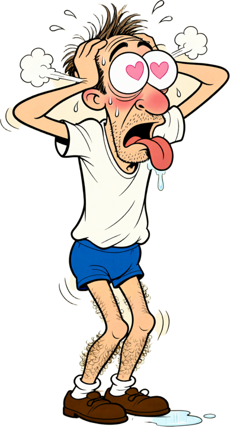

Krok 1Film do poprawy
Daj mi film!
Kliknij i wybierz film

mp4, mkv, mov, avi, webm. Kilka filmów naraz trafi do kolejki. Filmy można też upuścić na ikonę programu.
Krok 2Płynność
0,90
Rób film porównawczy
Otwórz folder po skończeniu
PodglądPrzed i po
100%
Gotowe!

PRZEDPOKrok 3Poprawiam film
0%
minęło0:00zostało około10:00

01Powiększanie 4× (RelayVSR)
02Biel, kontrast, odszumianie
03RIFE do 120 kl./s
04Film porównawczy
Log
Przerwać poprawę?

Coś się wywróciło

KolejkaNastępne filmy
Kolejka jest pusta.